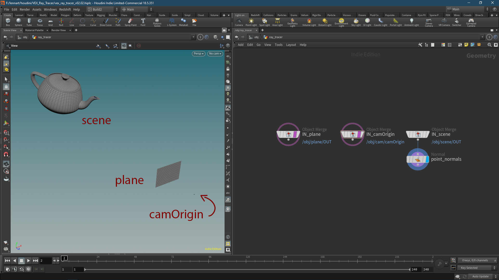
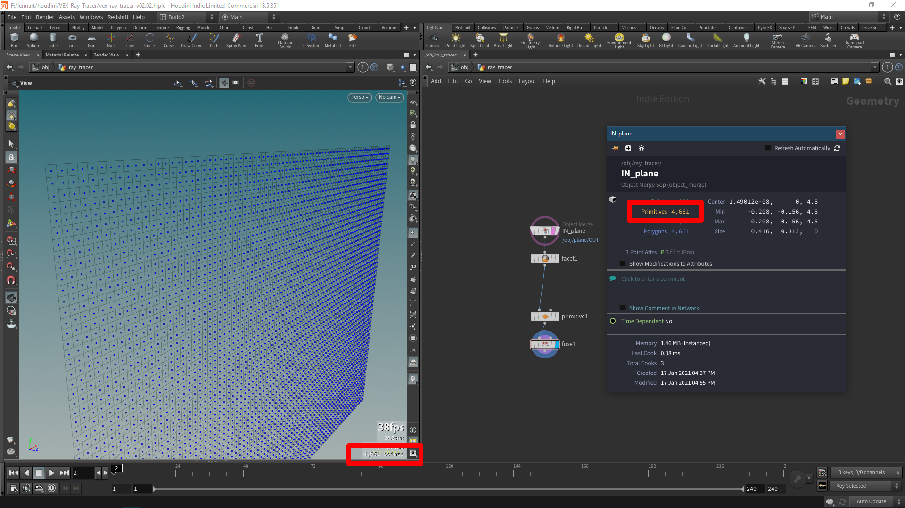
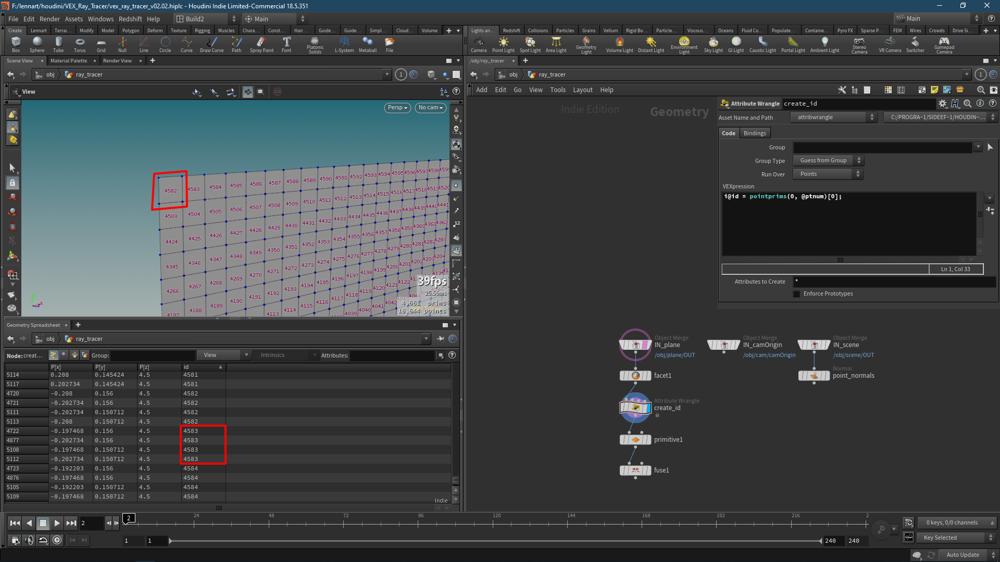
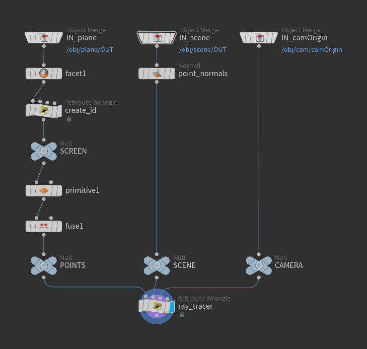
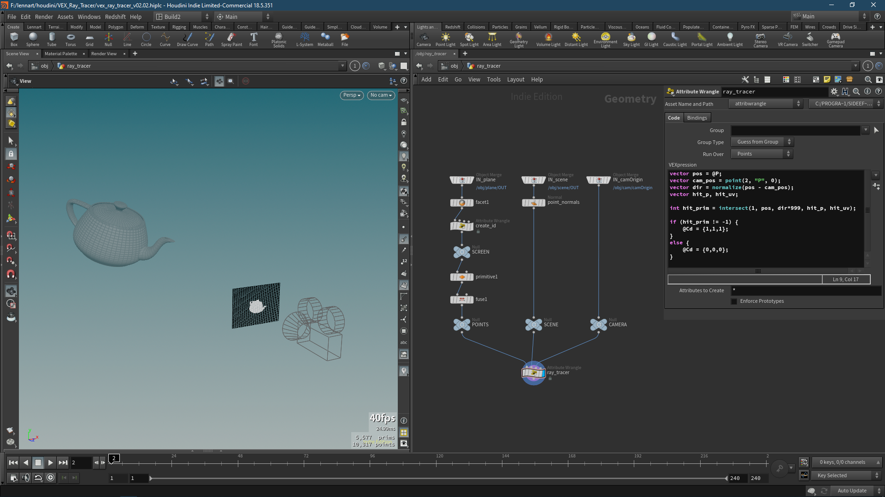
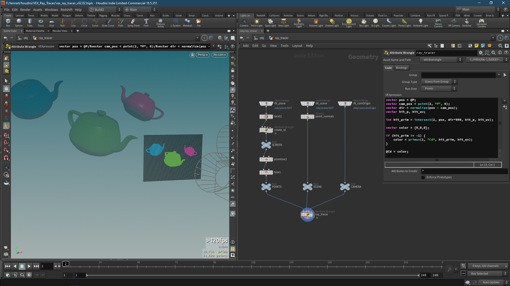
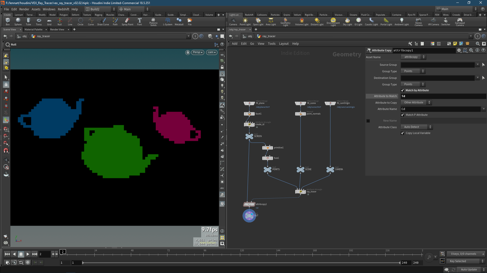
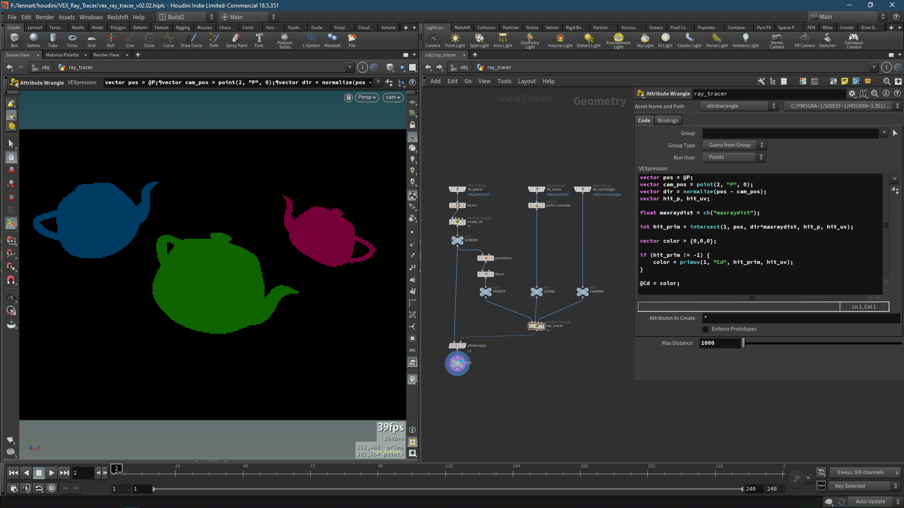

VEX Ray Tracer #2: Plane Projection
Now let’s get into it. I read in all three elements (plane, camera and scene) into the empty ray_tracer geometry.
Make sure to choose the camOrigin Add SOP inside the camera object to only merge in a single point instead of the camera visualizer. Also, transform into the object for both the camOrigin and the plane since they probably will have object transforms.
We are also adding point normals to the scene in case the come in on vertices or not at all. Later, we might move that into the scene object, in case we want to mess with the cusp angle, until then, leave them all as default.

Now we are going to turn the plane into a bunch of points. We will treat every primitive as the screens pixel, but since each primitive contains four points (as long as they’re rectangles/squares) that are connected to other primitives, we need to create unique points for each primitive, before scaling them all down to a singular point.
For that, we simply append a Facet SOP to the plane check Unique Points, followed by a Primitive SOP with Do Transformation enabled and scale set to 0, 0, 0. This will now take each primitive and scale it down to a single point along it’s centroid. We append a Fuse SOP since now we have four points on top of each other. Un-check Remove Unused Points from Degenerate Primitives to keep a single point and remove all primitive data. We now have one point instead of each primitive.

Note the amount of points after the fuse and amount of primitives on the object merge.
Since we are left with a bunch of points now, we have to create an attribute that we can use to remember what primitive we came from. For that we can use the original primitive number as an ID on the points. And while we could create a primitive ID and promote it to points, why don’t we use this opportunity to write our first line of VEX code. Create an Point Wrangle between the Facet and the Primitive SOP and write the following:
i@id = pointprims(0, @ptnum)[0];
So what does this do? The pointprims() function returns an array with all primitive numbers each point is connected to. Since we appended the wrangle after the Facet, we know each point is only connected to a single primitive, therefore instead of writing an array with a single primitive number, we call the first (and only) index right away and save it in the integer attribute @id.

You can see how we now have four points with the same ID. This means it worked.
Fusing the points later in the chain will keep the attribute, leaving one point per primitive with the id attribute to remember its original primitive by.
Now we can finally start with our first piece of actual ray tracing. Create a Point Wrangle and connect all three elements to it. The “pixel points” go into the first input since it’s what stores out results. I like to put the scene in the second input since we are going to use it the most. The camera goes into input three and we leave input four open for future lights.

First, we need to define a ray direction going out from each point which we will use to shoot them into the scene, gathering information.
For that, we need to subtract the position of the camera, with the position of each point. We will normalize the resulting vector to make future near/far clipping values more predictable.
vector pos = @P;
vector cam_pos = point(2, "P", 0);
vector dir = normalize(pos - cam_pos);
You can temporarily store the vector dir in the normal attribute @N to check if the direction is correct.
@N = dir; //temporarily visualize dir vector.
Now, we can use our new direction vector to shoot a ray into our scene and see what we get.
vector hit_p, hit_uv;
int hit_prim = intersect(1, pos, dir*999, hit_p, hit_uv);
We create two empty vectors called hit_p and hit_uv to store the hit position and the UVs of the hit primitive, which number is being stored in the hit_prim integer.
We use the intersect() function to check if a point will “hit” an object in the scene. For that we will temporarily multiply the dir vector by a big number to make sure we will reach the teapot in the scene.
The intersect function, as stated above, returns the primitive number of the prim that’s intersected. If there is no primitive intersected by a given ray, It’ll return -1.
Therefore we can check in with a simple condition if the hit_prim is -1 or not.
if (hit_prim != -1) {
@Cd = {1,1,1};
} else {
@Cd = {0,0,0};
}
From now on, we will stay in the first block of the if condition to save computing time since we can throw out any ray that doesn’t hit anything and leave that black, aka {0,0,0};

Points that “hit” the teapot are coloured white, the rest stays black.
Congrats, you wrote your first ray tracer! Two more things before I let you go.
Firstly, let’s store the colour of the object on the point colour instead of just turning it white. For that, I will add a couple more objects and give them different colours.
Instead of turning the points white, we need to gather an objects colour upon detection. For that, we make use of the primitive number and UVs that we get with the intersect() function. If you haven’t heard of primuv() yet, you’re missing out, it goes tremendously with intersect (also with xyzdist(), but that’s for another day).
Select the previous code block we wrote and replace it with:
vector color = {0,0,0};
if (hit_prim != -1) {
color = primuv(1, "Cd", hit_prim, hit_uv);
}
@Cd = color;
Since we initialize the colour vector with black, there is no need for the else statement anymore (unless you want to give empty space a different colour). When we do hit a primitive though, we collect it’s colour at a particular uv coordinate. This will be particularly helpful with multicoloured objects or other attribute that need to be interpolated.

The second thing we need to do, is to copy all the gathered information back onto our original plane. For that, all we need to do is use an Attribute Copy to copy over Cd with id set as the Attribute to Match.

Hurray, we did it!
One thing I will add quickly is a max ray dist slider to the intersect function since I know I will forget otherwise. I will set it to 1,000 for now.
float maxraydist = ch("maxraydist");
int hit_prim = intersect(1, pos, dir*maxraydist, hit_p, hit_uv);
Now we can up-res the plane and see our teapots in glorious 320x240 px.

< [[VEX Ray Tracer 01 - Initial Setup|Initial Setup]] | [[VEX Ray Tracer 03 - Supersampling Anti-Aliasing|Supersampling Anti-Aliasing]] >